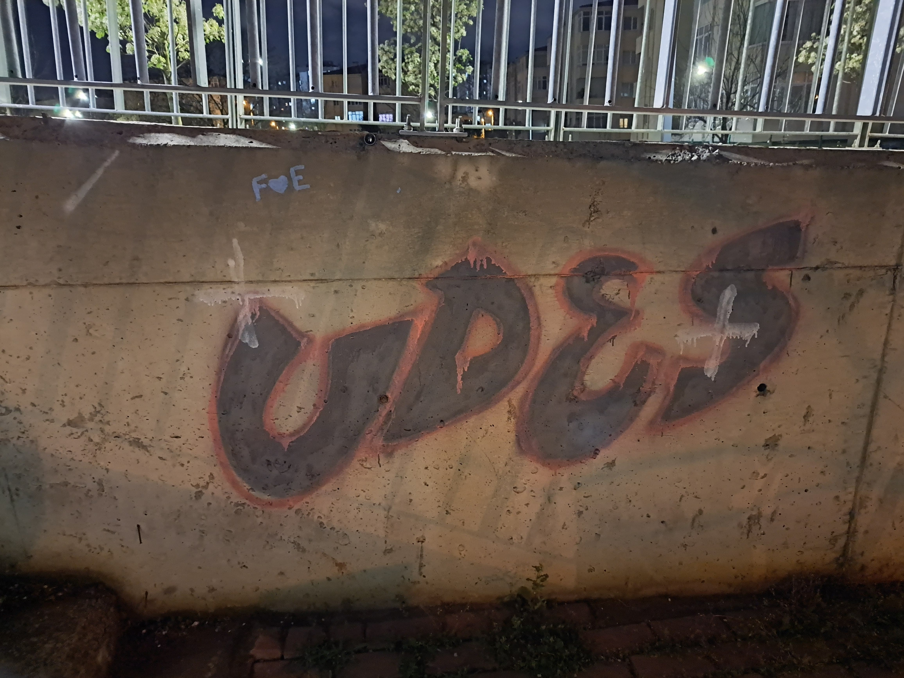

23.03.2025

"Bu, benim ilk graffiti denemem. Benim için çok değerli çünkü her ne kadar temiz ya da yeterince iyi bir çalışma olmasa da, bu benim başlangıç noktam; bu alandaki gelişimimin ilk basamağıydı. Onu benim için daha da değerli kılan şey ise, büyük bir heyecanla en yakın arkadaşımla birlikte başlamış olmamızdı. Bu yüzden benim için kolay kolay silinmeyecek bir anı olarak kalacak. Çalışırken sokaktan geçen yaşlı insanların, sanki bir sanat eserini inceler gibi uzun uzun bakmaları ve ardından bizi tebrik edip desteklemeleri ise o günü unutulmaz kılan absürt ama tatlı detaylardan biriydi."